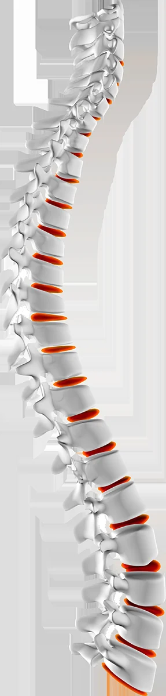
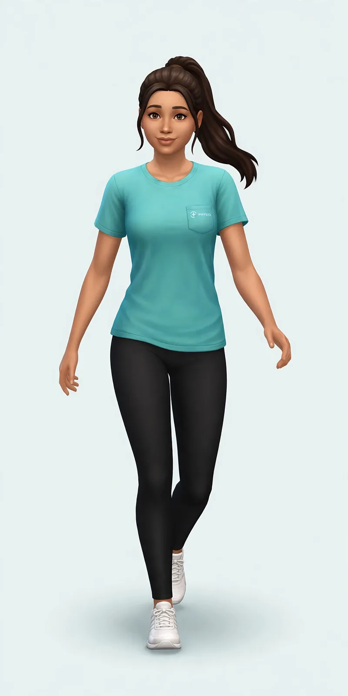
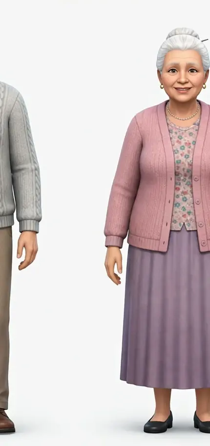
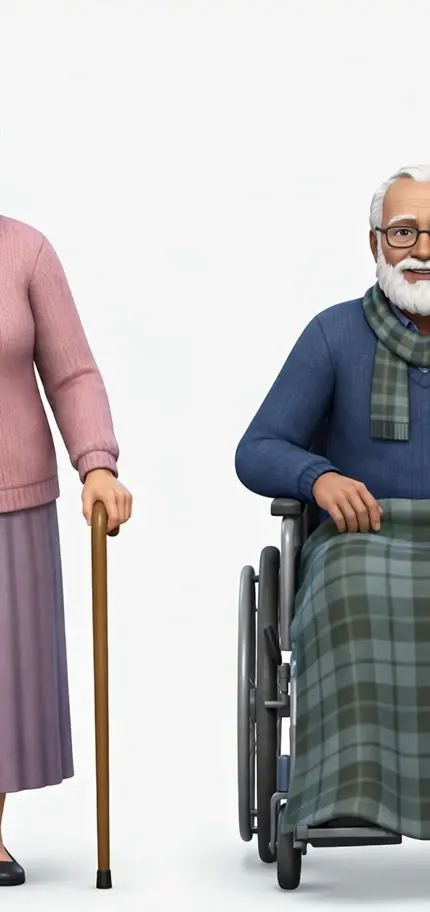
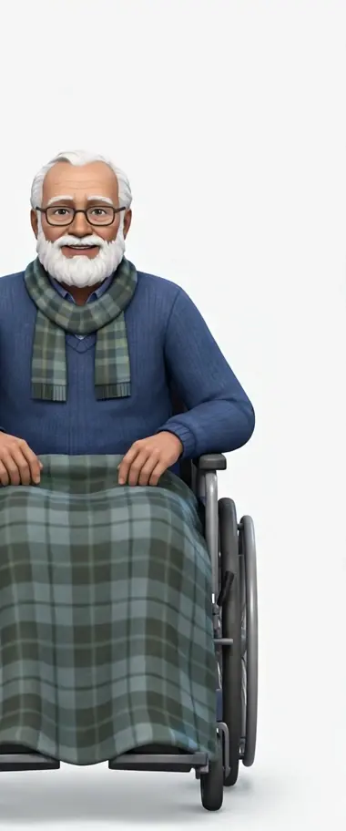
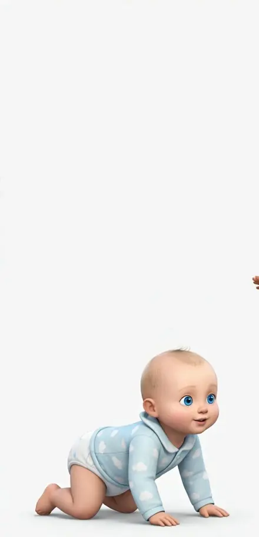
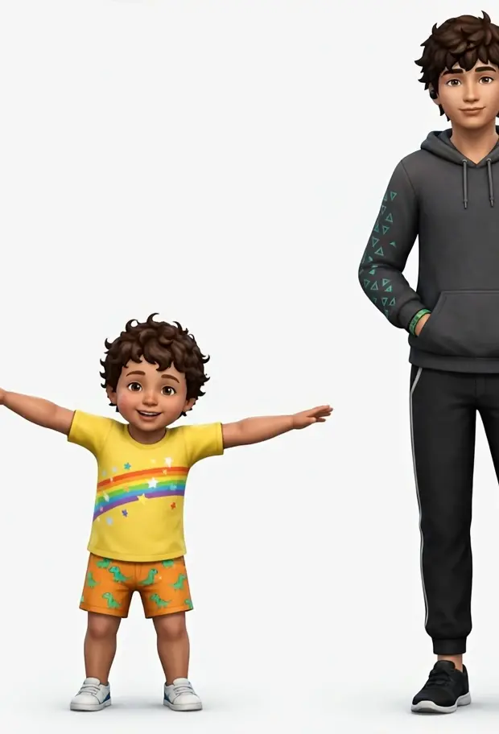
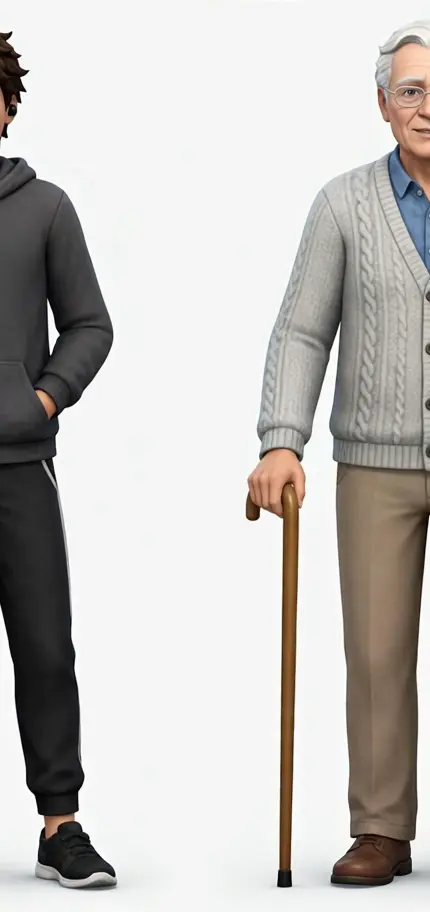

Completa tu perfil en la nube
Tu cuenta ya entró por la nube, pero tu perfil aún no guarda tu nombre y tu curso. Escríbelos una sola vez: quedan guardados en tu perfil de la nube y tu saludo y tus datos se separan por curso.
Panel
16 casos de fisioterapia y rehabilitación · 150 preguntas de simulacro · 145 herramientas de medición. Todo se calcula desde los registros guardados en este dispositivo.
Aprende evaluando
Practica, evalúa y rehabilita: pacientes de práctica, simulacros con nota y herramientas de medición reales, todo en un solo lugar.

Tu columna-camino: cinco vértebras, una meta
Una sola columna: sube del M1 a la META y toca cualquier parada para abrir su módulo.
Tu compañera de práctica — marcha, rodilla y hombro

Evolución por paciente
Sin datos todavía: guarda sesiones en Aprender a Rehabilitar para ver aquí la evolución del EVA y de la marcha de cada paciente.
EVA después de la sesión (0–10) y metros de marcha, en orden de fecha. Solo hechos registrados: nada se estima.
Pacientes que necesitan atención
| Paciente | Última sesión | Adherencia | Fase | Motivo |
|---|
Sin datos todavía: cuando registres sesiones, aquí aparecen solo los pacientes con EVA alto, objetivo no cumplido o sin sesión reciente.
Hoy
Sin sesiones registradas hoy.
Racha, puntos y nivel salen de la lista diaria del plan, el ejercicio en vivo y el juego de blancos. Son constancia de práctica, no una valoración clínica.
Tu formación en el cuerpo — progreso por módulo
Cada módulo enciende su zona del cuerpo: M1 el cuerpo entero · M2 el torso y la columna · M3 las zonas de lesión (hombro y rodilla) · M4 brazos y piernas · M5 las manos que verifican y registran. Al completar un módulo, su zona brilla en teal con su check.
Regla de oro del auxiliar
El auxiliar ejecuta, asiste, observa y registra bajo indicación y supervisión del fisioterapeuta. No diagnostica, no prescribe, no modifica el plan y no administra medicamentos.
Accesos directos
Pacientes virtuales
Respaldo de registros
Exporta todos tus registros (fichas del auxiliar, fichas pediátricas, sesiones a domicilio, registros de herramientas, análisis y progreso) en un solo archivo. Guárdalo en tu Drive o envíatelo: en otro celular puedes importarlo y recuperar todo.
Aviso: tus datos se guardan en este dispositivo con tu cuenta y se suben a la nube del curso cuando sincronizas desde la sección Nube. Este respaldo JSON sigue siendo tu copia manual: si borras la app o cambias de celular, expórtalo antes para no perder registros que aún no se hayan subido.
16 casos de fisioterapia de los Módulos 2 a 5. Todos son pacientes ficticios de práctica, creados para clase.
Tu personaje 3D — toca una articulación y abre su caso
Las articulaciones con casos llevan un punto coral sobre la imagen: tócalo y se abre el caso de esa zona. Solo educativo, no diagnostica.
Puntos coral = articulaciones con casos. Toca uno y se abre su caso.
Simulacros: 150 preguntas
Los cinco simulacros oficiales de práctica, completos: 30 preguntas por módulo, 150 en total. Cada respuesta te muestra al instante el porqué. Intentos ilimitados y sin nota: son para aprender, no para calificarte.
Biblioteca — zonas del cuerpo en 3D
Cinco zonas con su figura 3D y su personaje en la pose de la zona: rodilla, zona lumbar, hombro, tobillo y cuello. Todo funciona aquí dentro, sin depender de ningún servicio externo.
Lorea — atlas del cuerpo humano en 3D
Atlas anatómico 3D en línea (carga unos 3 MB al abrirlo), con datos BodyParts3D bajo CC BY 4.0. Ábrelo aquí dentro, sin salir de FisioSimula.
Open Anatomy Atlas
Segundo atlas abierto en línea, con código bajo licencia MIT. Ábrelo aquí dentro, sin salir de FisioSimula.
El atlas no terminó de cargar aquí dentro. Puede ser falta de internet o que el sitio lo bloquee en este momento. No es tu avance ni tus datos: puedes intentarlo de nuevo o abrirlo en su sitio.
El atlas 3D se descarga de su sitio y puede tardar unos segundos la primera vez. Quédate en esta pantalla: aparecerá aquí mismo.
Estás viendo el atlas sin salir de FisioSimula. Pulsa Cerrar para volver a la Biblioteca. Si el interior del atlas queda en blanco tras la carga, usa «Abrir en su sitio».
Zonas del cuerpo — figura 3D con la zona resaltada
Elige una zona y cambia de capa: el personaje en su pose, la capa muscular y el hueso con la articulación resaltada. Abajo, en corto: qué se ve, qué hace el auxiliar ahí y el caso que practica esa zona.
Herramientas de medición — 145
Cronómetros, contadores, calculadoras, escalas EVA y Borg, goniómetro, GPS y gráfica de evolución: las 145 herramientas se usan aquí mismo. Si el navegador no da un sensor (cámara, GPS o permiso), cada una acepta entrada manual.
Test de marcha con los sensores del teléfono (GPS + acelerómetro)
Marcha de 6 minutos, marcha de 10 metros y Timed Up and Go usando los sensores reales: el GPS registra el recorrido y lo traza en el mapa, el acelerómetro cuenta los pasos y la cadencia en vivo, y el desnivel sale del barómetro si el teléfono lo expone por la API de sensores; si no, de la altitud GPS, y la app lo dice claro. También puedes subir un video de marcha ya grabado y analizarlo en Análisis de Foto y Video, como alternativa a caminar con GPS en vivo.
Listo. Elige el test y pulsa Iniciar: el GPS trazará el recorrido en el mapa de abajo mientras caminas.
Simetría por lado (opcional): si registras los pasos por lado tocando estos botones, la app calcula la simetría. Sin registro por lado, el resultado dirá «simetría: no registrada por lado» — el acelerómetro por sí solo no sabe qué pie pisó.
Recorrido en el mapa
El mapa con el recorrido trazado aparece al detener el test. Si el mapa no puede cargar en este dispositivo, verás aquí el resumen del recorrido con los mismos números.
Marcha con el teléfono en el bolsillo (IMU)
El paciente camina con el teléfono en el bolsillo del pantalón y la app usa el acelerómetro y el giroscopio (la IMU del teléfono), como hacen los sistemas de análisis de marcha sin laboratorio: detecta cada contacto inicial del pie con el suelo, estima el despegue entre contactos, calcula la cadencia y una simetría estimada comparando los pasos alternos. Complementa al GPS y a la cámara: aquí no hace falta señal de GPS ni grabar video.
Al pulsar Iniciar, algunos teléfonos piden permiso de movimiento. Guarda el teléfono en el bolsillo, espera 2 segundos quieto y camina a ritmo habitual.
Goniómetro
El arco y la lectura del ángulo se dibujan en vivo sobre el personaje, junto a la articulación elegida.
Después de medir: qué sigue en rehabilitación
El resultado de cada test no es el final: ubica la fase del paciente (aguda, recuperación o funcional, en Aprender a Rehabilitar), sigue con la movilización progresiva de esa fase (pasiva → activa-asistida → activa → funcional) y el ejercicio indicado por el fisioterapeuta, y registra la evolución sesión a sesión. El auxiliar no cambia la fase ni el ejercicio: lo comunica al fisioterapeuta.
Mis registros y gráfica de evolución
Todo lo que guardes queda solo en este dispositivo (localStorage), con su fecha. Elige una herramienta con valores numéricos para ver su evolución en el tiempo.
Análisis de Foto y Video
MediaPipe Pose · 33 puntos · en tu celularTecnología de código abierto verificada, gratis y sin servidor. Sube una foto o un video corto y la inteligencia de visión detecta el cuerpo, dibuja el esqueleto y calcula ángulos y medidas de observación. Todo se procesa 100% en este dispositivo: la foto y el video NO se suben a ningún servidor, no salen de tu celular.
Privacidad: 100% local
MediaPipe Pose Landmarker de Google corre en el navegador con WebAssembly (WASM). El archivo que eliges se queda en memoria de esta pestaña. Al cerrar o cambiar de archivo, desaparece. FisioSimula no lo guarda ni lo envía.
Tecnología: @mediapipe/tasks-vision — Pose Landmarker · Licencia Apache-2.0 · 33 landmarks corporales · Modelo lite oficial de Google. Método de marcha inspirado en Stride Lab y en toolkits abiertos como myogait (11 backends de pose: MediaPipe, OpenPose, Sapiens…) y Sports2D (ángulos 2D desde un solo video, código abierto).
Límites honestos — léelos antes de usarlo
- Una foto sola NO diagnostica una lesión. Esto es cribado y registro para el fisioterapeuta, no diagnóstico.
- Es análisis 2D, no 3D y no es de laboratorio: NO mide fuerza real — la fuerza por pie del Análisis de Salto es solo ESTIMADA, nunca medida — no mide pronación real del pie y no predice lesiones.
- Los puntos del pie (talón y punta) son los menos fiables de los 33: el tipo de pisada y el arco son solo una estimación.
- Si la confianza de los puntos es baja, la app lo dice y pide repetir la grabación: no inventa un número.
- El auxiliar registra y deriva. Quien interpreta y decide es el fisioterapeuta.
Cómo grabar para que funcione
1. Elige qué quieres analizar
2. Sube tu archivo
Tu video no sale de tu teléfono: se procesa 100% en este dispositivo con MediaPipe, igual si lo grabas aquí o si lo subes desde tu galería. Nada se envía a ningún servidor. Si el video es largo, se analizan solo los primeros 12 segundos y la app te lo dice. Formatos: MP4, MOV y WebM.
Modelo aún no cargado. Se descarga una sola vez (unos pocos MB) la primera vez que pulsas «Analizar», desde el CDN oficial de Google/MediaPipe. Después trabaja en el navegador.
3. Informe de observación
Todavía no hay análisis. Sube un archivo y pulsa «Analizar». Si la confianza es baja verás un aviso aquí en vez de números: en ese caso repite la grabación con más luz y cuerpo entero.
El informe dice «qué se observó y se midió», nunca «qué lesión tiene». Llévalo al fisioterapeuta: él interpreta.
Personajes 3D del análisis (marcha y salto)
Cuando analices un video, aquí ves la secuencia 3D que ilustra ese movimiento fotograma a fotograma, con los ángulos calculados de tu video: reproduce, pausa y avanza con el deslizador. Los números salen de los 33 puntos de MediaPipe de tu video; el personaje ilustra la pose, no es tu cuerpo. Solo educativo, no diagnostica.
Todavía no hay video analizado: analiza un video de marcha o de salto y aquí verás la secuencia 3D de ese movimiento, fotograma a fotograma, con sus ángulos.
Qué mide cada análisis
| Análisis | Métricas que calcula | Para qué le sirve al auxiliar |
|---|---|---|
| Foto · Postura | Plomada virtual, simetría de hombros y cadera (°), ángulos de rodilla y tobillo, inclinación de tronco y de pelvis, desplazamiento de cabeza | Registrar postura frontal/lateral y comparar sesión a sesión |
| Foto · Pie | Ángulo del pie al apoyo, altura estimada del tobillo respecto al pie, estimación de arco (alto / medio / bajo) — solo estimación | Observar el apoyo y derivar dudas al fisioterapeuta |
| Video · Marcha | Cadencia (pasos/min), longitud de paso y zancada (cm estimados), tiempo de apoyo, simetría izq/der, ángulos de cadera/rodilla/tobillo, inclinación de tronco, caída pélvica (signo de Trendelenburg observado), sobrezancada, oscilación vertical, tipo de pisada al contacto: talón / medio / antepié | Registrar la marcha como en Stride Lab / Sports2D, en 2D y con un solo celular |
| Video · Salto | Altura por tiempo de vuelo con la fórmula h = g·t²/8 y altura por desplazamiento de cadera, tiempo de vuelo y de contacto, impulso estimado, fuerza media ESTIMADA por pie izquierdo y derecho (N y veces el peso corporal, exige peso en kg), dorsiflexión y flexión de rodilla/cadera al aterrizar, POSIBLES acortamientos a revisar con test de confirmación | Registrar el salto y derivar los hallazgos al fisioterapeuta. Sin plataforma de fuerza no hay fuerza real. |
Análisis de Salto — detalle completo
Usa el modo Video · Salto de arriba: sube un video de lado para la altura y el aterrizaje, y otro de frente para la simetría. Escribe siempre el peso corporal en kg: sin peso, este módulo no muestra ningún número de fuerza.
Sin plataforma de fuerza no hay fuerza real. Los valores por pie son una estimación a partir del peso, el tiempo de vuelo y el tiempo de contacto del video.
Cómo se calcula la altura y la fuerza estimada
- Altura por tiempo de vuelo: h = g · t² / 8, con g = 9,81 m/s² y t = tiempo de vuelo medido entre despegue y aterrizaje. El informe muestra la fórmula con tu tiempo sustituido.
- Altura por cadera: desplazamiento vertical de la cadera, pasado a cm con la altura real de la persona. Sirve para contrastar la altura por vuelo.
- Velocidad de despegue: v = g · t / 2. Impulso neto estimado: J = masa · v (N·s).
- Fuerza media estimada: fuerza total ≈ peso corporal + J ÷ tiempo de contacto. El tiempo de contacto se estima del video: impulso (bajada profunda antes de despegar) y aterrizaje (contacto hasta la máxima flexión que absorbe).
- Por pie: la fuerza total se reparte entre pie izquierdo y derecho según qué pie contacta primero al aterrizar y la simetría observada. Si el contacto no se ve claro, no se muestra número: se pide repetir el video.
Cómo grabar el salto
- De lado: trípode a la altura de la cadera, cuerpo entero, pies visibles al despegar y al caer en el mismo sitio.
- De frente: para ver si las rodillas caen hacia dentro y si un pie apoya antes que el otro.
- Un solo salto por video, de unos 4–6 segundos, con 1 segundo quieto antes y después.
- Sin plataforma, sin laboratorio: todo sale del video y del peso que escribas.
Acortamientos musculares probables a revisar — no es un diagnóstico
El análisis marca un POSIBLE acortamiento solo como señal a revisar. Lo confirma o lo descarta el fisioterapeuta con el test correspondiente. El auxiliar registra la señal y deriva: no afirma que el acortamiento exista.
| Músculo / grupo | Señal que se observa en el salto | Test para confirmarlo (lo valora el fisioterapeuta) |
|---|---|---|
| Gastrocnemio / sóleo | Dorsiflexión baja al aterrizar: el tobillo casi no se dobla y el talón se levanta pronto | Medición de dorsiflexión en carga y con goniómetro, comparando lados; distancia dedos-suelo como dato complementario |
| Cuádriceps — recto femoral | Flexión de rodilla baja o muy distinta entre lados al absorber el aterrizaje | Test de Ely |
| Isquiotibiales | Aterrizaje rígido, poca flexión de rodilla y tronco que se inclina en exceso hacia delante | Distancia dedos-suelo y registro de flexión de cadera con rodilla extendida |
| Flexores de cadera (psoas, recto femoral) | Extensión de cadera baja al despegar o al aterrizar, con la zona lumbar arqueada | Test de Thomas |
| Banda iliotibial / tensor de la fascia lata | En vista frontal, la rodilla cae hacia dentro al aterrizar y la pelvis se desnivela | Test de Ober |
Terapias manuales y físicas por enfermedad — Módulo 4
Referencia del plan del fisioterapeuta, con los casos reales del Módulo 4. Nunca es una prescripción de esta app ni del auxiliar: cada técnica se aplica solo si está indicada por escrito. Para cada enfermedad: qué hace el fisioterapeuta, qué asiste y registra el auxiliar, y qué NO debe hacer el auxiliar.
Síndromes invalidantes: parálisis, disfunción medular, Parkinson e invalidez grave articular
Fisioterapeuta: valora movimiento, fuerza e independencia y define movilizaciones progresivas, ayudas técnicas y agentes según cada síndrome.
Auxiliar: asiste la movilización indicada, acompaña marcha y transferencias, observa rigidez, temblor, fatiga o espasmo y registra tolerancia.
NO debe: forzar rangos, decidir progresiones ni prometer recuperación.
Hemiparesia / hemiplejia y autocuidados — Alberto, 68 años (M4)
Fisioterapeuta: plan de movilidad y fortalecimiento suave del lado afectado, entrenamiento de marcha con andador y trabajo de autocuidados.
Auxiliar: prepara el área sin obstáculos, acompaña sin soltarlo, guía los ejercicios indicados a ritmo lento con pausas y registra distancia, EVA y cansancio. Protege el hombro afectado: se sostiene, nunca se tira de él.
NO debe: quitarle el andador «para que se esfuerce», aumentar distancia o repeticiones, ni decir a la familia cómo evolucionará.
Gran dependencia tras hospitalización — Elena, 74 años (M4)
Fisioterapeuta: movilizaciones pasivas y activas asistidas en cama, transferencias progresivas cama–silla, cambios posturales y ejercicios respiratorios suaves.
Auxiliar: realiza transferencias con la técnica indicada y ayuda de otro profesional si hace falta, ayuda en cambios posturales y registra tolerancia, tiempo sentada y colaboración.
NO debe: levantarla solo si la indicación exige dos personas, sentarla mucho tiempo «para que se acostumbre» ni prometer plazos.
Artritis
Fisioterapeuta: dosifica movilidad suave y fortalecimiento ligero según inflamación y día del paciente; en brote, baja la carga.
Auxiliar: guía lo indicado a ritmo suave con pausas, observa articulaciones hinchadas o calientes y registra dolor, rigidez y fatiga de ese día.
NO debe: forzar una articulación inflamada, subir repeticiones «para avanzar» ni opinar sobre la medicación.
Úlcera por presión / por decúbito — Ramón, 81 años (M4)
Fisioterapeuta / equipo: valora el riesgo con la escala de Braden y programa cambios posturales y revisión de piel. El tratamiento de una úlcera ya formada no es tarea del auxiliar.
Auxiliar: cambios posturales programados, revisión de sacro, talones y caderas en cada cambio, piel y sábanas limpias, secas y sin pliegues, y registro de cada cambio y de lo observado.
NO debe: tratar la úlcera, aplicar cremas, pomadas o apósitos, ni masajear una zona enrojecida. Ante ampolla o herida: no tocar, avisar y registrar.
Movilizaciones progresivas: pasiva, activa asistida, activa y funcional
Fisioterapeuta: decide el tipo y el momento de progresar según movilidad, fuerza y tolerancia.
Auxiliar: ejecuta solo el tipo indicado, fija y apoya el segmento vecino, pregunta el dolor y registra rango alcanzado y tolerancia.
NO debe: pasar de pasiva a activa por su cuenta ni forzar el final del rango.
Ayudas técnicas: andador, bastón, muletas y silla de ruedas
Fisioterapeuta: elige la ayuda, ajusta su altura y enseña su uso seguro.
Auxiliar: verifica que la ayuda esté en buen estado y a mano, acompaña la marcha y registra distancia, seguridad y ayuda necesaria.
NO debe: retirar o cambiar la ayuda indicada ni dejar solo a un paciente inestable.
Agentes físicos: cinesiterapia, hidroterapia, masoterapia y ultrasonido
Fisioterapeuta: indica el agente, la zona, la dosis y el tiempo: movimiento terapéutico, ejercicio en agua, masoterapia con sus maniobras (deslizamiento, amasamiento, fricción) o calor profundo con ultrasonido.
Auxiliar: prepara área, camilla, agua o equipo según la indicación, asiste la sesión y registra agente, tiempo y respuesta del paciente.
NO debe: aplicar ningún agente sin indicación, improvisar maniobras de masaje ni usar ultrasonido sobre piel lesionada o sin sensibilidad.
Agentes térmicos: termoterapia y crioterapia
Fisioterapeuta: decide calor o frío según la fase: frío en cuadros agudos e inflamados; calor en rigidez y contractura, con protección y tiempo definidos.
Auxiliar: aplica solo lo indicado, con la protección indicada, vigila la piel durante la aplicación y registra zona, tiempo y tolerancia.
NO debe: cambiar frío por calor «porque ya pasaron días», ni aplicar sobre piel lesionada o sin sensibilidad.
Agentes electromagnéticos: electroterapia, láser y magnetoterapia
Fisioterapeuta: indica el equipo y sus parámetros (por ejemplo TENS para el dolor) y las precauciones de cada equipo.
Auxiliar: prepara el equipo y los electrodos o aplicadores según la indicación, verifica que el paciente no refiera molestias y registra equipo, zona, tiempo y respuesta.
NO debe: ajustar parámetros, decidir intensidad ni aplicar sin indicación escrita.
Bandas elásticas y fortalecimiento progresivo — Lucía, 36 años, hombro (M4)
Fisioterapeuta: elige color y resistencia de la banda, series y repeticiones, y cuándo progresar.
Auxiliar: revisa que la banda no tenga roturas, guía el ejercicio indicado vigilando compensaciones, pregunta el dolor en cada serie y registra banda, series, repeticiones y tolerancia.
NO debe: pasar a una banda más fuerte porque «ya le sale fácil» ni añadir ejercicios nuevos.
Fuentes abiertas en las que se apoya este módulo
MediaPipe Pose Landmarker — Google, Apache-2.0, 33 landmarks, WebAssembly en el navegador. github.com/google-ai-edge/mediapipe · myogait — toolkit abierto de análisis de marcha con 11 backends de pose. · Sports2D — cálculo abierto de ángulos 2D desde un solo video. · Método de observación de marcha tipo Stride Lab: cadencia, sobrezancada, oscilación vertical, caída pélvica y tipo de contacto del pie. Ninguna de estas herramientas diagnostica: miden y registran.
Ficha del paciente — historia clínica
Escribe los datos y todo se calcula al instante: IMC, FCmáx (220 − edad), Karvonen, zonas de intensidad y clasificación de la presión arterial. Se guarda por paciente y fecha en este dispositivo y entra completa en el informe final.
Escribe edad, peso, talla y signos vitales: aquí aparecen al instante el IMC con su fórmula, la FCmáx (220 − edad), la reserva de Karvonen, las zonas de intensidad y las clasificaciones con sus avisos.
Ejercicio en vivo — corrección de forma con la cámara
El teléfono mira el ejercicio con MediaPipe y corrige en vivo, como hacen las aplicaciones de rehabilitación con cámara (tipo Kaia o SWORD): cuenta las repeticiones por el ángulo de la articulación y avisa si la rodilla se va por dentro o si el ritmo es demasiado rápido. Todo se procesa en este dispositivo.
Qué es y qué no es esta corrección
- Es corrección por cámara 2D: en la rodilla el error habitual frente a un goniómetro es de unos 3–4°. Sirve para practicar la forma y contar repeticiones, no es precisión de sensor clínico.
- No mide fuerza, no diagnostica y no cambia el plan: el ejercicio, las series y la progresión los indica el fisioterapeuta.
- Sin cámara o sin permiso, usa el contador manual: tocas una vez por repetición y la marcas buena o a corregir según lo que observas.
La dificultad se adapta: con más del 80% de repeticiones buenas en una serie de 10, el nivel sube (más rango o más repeticiones); por debajo del 50%, baja. Es dificultad del ejercicio guiado, dentro de lo indicado por el fisioterapeuta.
Lista diaria del plan de este paciente
Marca lo cumplido hoy. Cada tarea hecha suma puntos y alimenta la racha y la adherencia del Panel. Es el mismo registro que la lista diaria de Aprender a Rehabilitar: usa el mismo nombre de paciente en las dos.
Juego de blancos 3D — alcanzar con la mano
Blancos que aparecen a izquierda y derecha en una escena 3D y el paciente los alcanza moviendo la mano frente a la cámara. Gana puntos, se mide su tiempo de reacción y los aciertos por lado, y la dificultad sube sola. Se puede jugar también tocando los blancos con el dedo, sin cámara.
Modo cartón VR: divide la vista en dos para un visor de cartón barato. Es solo una vista 3D simple en el teléfono, sin inmersión total ni seguimiento de cabeza. Cada 8 aciertos la dificultad sube: blancos más pequeños que duran menos tiempo.
Simulacro Final M1–M5
Simulacro final estilo examen: 30 preguntas mezcladas de los cinco módulos, 6 de cada uno, como en un examen real. Cada respuesta muestra el porqué al instante. Es práctica de preparación con el contenido del curso: intentos ilimitados y sin nota oficial.
Guía por Motivo de Consulta
Escribe el motivo con tus propias palabras y la guía te sugiere en tiempo real, mientras escribes y sin pulsar ningún botón, la batería de test a realizar: qué evalúa cada test, cómo se hace paso a paso, cuál es el signo positivo, qué debe registrar el auxiliar y qué sigue en rehabilitación. Son los test de evaluación clínica por módulo del curso.
Escribe lo que le duele o le pasa al paciente, como lo diría él: por ejemplo «me duele la rodilla al subir escaleras», «esguince de tobillo», «operación de cadera hace 2 semanas» o «dolor de espalda baja». La solución aparece abajo al instante, con cada letra.
O elige un motivo directamente:
Goniómetro de la guía
Practica el rango del test que estás viendo: el arco y el ángulo aparecen en vivo sobre el personaje.
Adultos Mayores — evaluación y seguimiento
Batería de seguimiento del adulto mayor: equilibrio, marcha, fuerza funcional, riesgo de caída e independencia. Todos estos test también están en Herramientas para medirlos y guardar su evolución por fecha.



Seguridad primero — en cada test
- Nunca solo: el auxiliar acompaña en todo momento, a un brazo de distancia, en TUG, Berg, apoyo unipodal y marcha.
- Usa la ayuda técnica indicada (andador, bastón) tal como la dejó el fisioterapeuta: no se retira «para que se esfuerce».
- Silla firme contra la pared, calzado cerrado y antideslizante, suelo libre de obstáculos y alfombras sueltas.
- Ante mareo, dolor en el pecho, falta de aire o casi-caída: detener, sentar, avisar y registrar.
Adulto mayor — Timed Up and Go en secuencia
Personajes 3D en secuencia que muestran el TUG, fase por fase: sentado, de pie con su bastón, camina 3 metros acompañado, gira, vuelve y se sienta. Pausa y cambia la velocidad cuando quieras. Solo educativo, no diagnostica.
| Test | Qué evalúa y cómo se hace | Valores de referencia habituales (orientativos) | Qué registra el auxiliar |
|---|---|---|---|
| Timed Up and Go (TUG) | Levantarse de la silla, caminar 3 m, girar, volver y sentarse, cronometrado y siempre acompañado. | Menos de 10 s: movilidad muy independiente · 10–20 s: independiente con cautela · 20–30 s: necesita más apoyo y vigilancia · Más de 30 s: dependencia importante — referencia habitual, la valora el equipo. | Tiempo, ayuda usada (andador/bastón), seguridad y cualquier casi-caída. |
| Escala de Berg | 14 ítems de equilibrio, cada uno 0–4. Total sobre 56. | 56–45: equilibrio conservado · 44–21: equilibrio reducido, más vigilancia · 20–0: dependencia para moverse con seguridad — referencia habitual. | Puntaje total e ítems con menor puntaje. |
| Apoyo unipodal | Tiempo sobre un pie junto a una silla o pared, por pierna. | 65–69 años: ~22–27 s · 70–79: ~14–22 s · 80+: ~8–14 s (ojos abiertos, referencia habitual por edad). | Segundos por pierna y si necesitó apoyo. |
| Chair Stand 30 segundos | Levantarse y sentarse de una silla estándar en 30 s, brazos cruzados si la indicación lo permite. | Referencia habitual (Rikli y Jones), repeticiones: 60–64 años: 14–19 · 65–69: 12–18 · 70–74: 12–17 · 75–79: 11–17 · 80–84: 10–15 · 85–89: 8–14 · 90+: 4–11. Bajo el rango sugiere seguir trabajando fuerza, según el plan. | Repeticiones completas y tolerancia. |
| Marcha de 10 metros | Velocidad caminando 10 m a ritmo habitual, con la ayuda indicada. | 1,0 m/s o más: marcha funcional habitual · 0,8–1,0: vigilancia · Menos de 0,8 m/s: marcha limitada — referencia habitual asociada a mayor riesgo, la interpreta el equipo. | Velocidad en m/s, pasos, ayuda usada y seguridad. |
| Escala de Morse | Riesgo de caída: antecedentes de caída (25), diagnóstico secundario (15), ayuda para caminar (0/15/30), vía intravenosa (20), tipo de marcha (0/10/20) y estado mental (0/15). | Total: 0–24 riesgo bajo · 25–44 riesgo medio · 45 o más riesgo alto — con riesgo medio/alto se refuerzan acompañamiento y vigilancia. | Puntaje total, nivel de riesgo y medidas aplicadas (acompañamiento, ayuda, entorno). |
| Índice de Barthel | 10 actividades de la vida diaria: comer, bañarse, vestirse, moverse, ir al baño, entre otras. | 100: independiente · 91–99: dependencia escasa · 61–90: moderada · 21–60: importante · 0–20: total — referencia habitual. | Puntaje total y actividades donde necesita ayuda. |
| Goniometría y Daniels de seguimiento | Rangos articulares clave y fuerza 0–5 de los grupos que indica el plan, comparando con la sesión anterior. | Se comparan contra la medición anterior del mismo paciente y el mismo punto de medición, no contra otras personas. | Grados y grado Daniels por lado, con fecha, para ver la evolución. |
Educación al cuidador y a la familia
- Prevención de caídas en casa: pasillos libres, alfombras retiradas o fijadas, luz nocturna en el camino al baño, calzado cerrado y antideslizante, y las ayudas (andador, bastón) siempre al alcance y en el lado indicado.
- Cómo ayudar sin hacer daño: acompañar a un brazo de distancia, no tirar del brazo débil, ofrecer el apoyo en el lado indicado por el fisioterapeuta y dejar que la persona haga lo que ya puede hacer sola.
- Constancia del plan: repetir en casa solo los ejercicios indicados, en los horarios acordados, y anotar en una libreta qué se hizo y cómo se sintió: ese registro se trae a la siguiente sesión.
- Señales para avisar el mismo día: una caída aunque no duela, mareo nuevo, dolor que no cede, inflamación nueva o fiebre.
El auxiliar explica y deja las indicaciones por escrito; cualquier cambio del plan lo decide el fisioterapeuta.
Niños — Módulo Pediátrico
Módulo pediátrico completo: hitos del desarrollo motor por edad, evaluación por observación, test adaptados con valores por edad, señales de alerta, juegos terapéuticos indicados, guía para padres y ficha pediátrica propia que se guarda por niño y fecha y entra en el informe final.



Niños — hitos en secuencia
Personajes 3D en secuencia que muestran el hito, fase por fase, con su niño según la edad: bebé gateando para el gateo, niño pequeño para la marcha y niño en un pie para el salto. Pausa y cambia la velocidad cuando quieras. Solo educativo, no diagnostica.
Animación actual: gateo.
Hitos del desarrollo motor por edad
Elige el rango de edad y marca cada hito tal como se observó en la sesión. Sí: lo hace en la sesión de forma clara. En proceso: lo intenta, lo hace a veces o necesita apoyo — es parte normal del aprendizaje y se sigue estimulando según la indicación. No observado: no se vio en esta sesión; no significa que el niño no lo haga — puede estar cansado, con sueño o sin ganas de jugar. Solo un patrón repetido de «no observado» junto con retraso claro se comunica como señal de alerta.
Los hitos marcados quedan en la Ficha pediátrica al guardarla: abre la subsección «Ficha pediátrica», completa los datos del niño y pulsa guardar.
Terapia Física a Domicilio
Organiza cada visita a casa: checklist de llegada, ficha de sesión en casa e instrucciones para el cuidador. Todo se guarda por paciente y fecha en este dispositivo y entra en el informe final de la Ficha del Auxiliar.
Educación al cuidador en casa — qué dejar explicado en cada visita
- El plan entre visitas: qué ejercicios indicados se repiten, cuántas veces y a qué hora; quedan escritos en el campo «Instrucciones para el cuidador» de la ficha de sesión, no solo dichos en voz alta.
- Entorno seguro: espacio de ejercicio libre de obstáculos, silla firme contra la pared, buena luz y el teléfono o timbre al alcance por si necesita ayuda.
- Registro familiar: el cuidador anota en una libreta el ejercicio hecho, el dolor antes y después (0–10) y cualquier molestia: ese registro se revisa en la siguiente visita.
- Señales para llamar el mismo día: caída, dolor que sube de golpe, inflamación nueva, fiebre, mareo o falta de aire.
- Lo que el cuidador no debe hacer: añadir ejercicios nuevos, aumentar pesos o bandas por su cuenta, ni suspender lo indicado sin avisar al fisioterapeuta.
Qué llevar en el maletín
- Goniómetro y cinta métrica
- Banda elástica de la resistencia indicada
- Escala EVA impresa y fichas de registro
- Tensiómetro y pulsioxímetro si están indicados
- Toalla, gel/solución de manos y material de higiene
- Teléfono con FisioSimula: ficha, herramientas e informe
Checklist de visita — revísalo al llegar
- ▸ Espacio seguro: suelo libre, sin alfombras sueltas ni cables en el paso.
- ▸ Iluminación: luz suficiente para ver al paciente y registrar.
- ▸ Silla o cama estable: firme, sin ruedas sueltas, a la altura de trabajo.
- ▸ Material portátil listo: maletín completo y banda revisada.
- ▸ Signos vitales antes de la sesión y después, registrados en la Ficha del Auxiliar.
- ▸ Higiene de manos al llegar, antes y después de atender.
Marca cada punto en la ficha de sesión de abajo (Sí / No / No aplica): queda guardado con la visita.
Ficha de sesión en casa
Nube — Supabase
Sin conectar1. Configuración — el proyecto del curso ya viene conectado
Proyecto conectado: https://kaxjlyztcadgeuowbpce.supabase.co · Estado: Comprobando…
El proyecto FisioSimula del curso ya viene conectado en la app con su URL y su clave pública. Estos campos solo sirven si el docente cambia de proyecto (Supabase → Settings → API → Project URL y clave anon public). Nunca pegues la clave secreta service_role: esta app la rechaza si la detecta, porque esa clave salta todas las reglas de seguridad y jamás debe estar en una página de estudiantes.
Proyecto FisioSimula conectado desde la app.
2. Prepara tu proyecto: pega este script en Supabase
En Supabase abre SQL Editor → New query, pega todo el script y pulsa Run (solo una vez). Crea las tablas perfiles, cuentas, pacientes, fichas y evoluciones y el perfil automático al registrarse.
3. Tu cuenta (Supabase Auth)
Sin sesión iniciada.
El registro guarda tu nombre, curso y rol en tu perfil. Si Supabase te pide confirmar el correo, hazlo desde tu bandeja antes de iniciar sesión.
4. Sincronización
Pendientes de subir: 0
Todavía no se ha sincronizado nada en esta sesión.
5. Conectar la nube, paso a paso (solo el docente)
- El proyecto del curso ya existe y la app ya viene conectada a él: kaxjlyztcadgeuowbpce.supabase.co. Si un día creas otro proyecto, pega su URL y su clave anon public en el paso 1.
- En ese proyecto abre SQL Editor → New query, pega el script del paso 2 de esta pantalla y pulsa Run. Eso crea las tablas perfiles, cuentas, pacientes, fichas y evoluciones, con reglas por cuenta y por curso: cada estudiante ve solo lo suyo y un curso no ve los datos del otro.
- Pulsa Guardar y probar conexión en el paso 1 para comprobar que el proyecto responde desde este dispositivo.
- En Supabase abre Authentication → Users → Add user → Create new user y crea la cuenta de cada estudiante de tus cursos con su correo y la clave que ese estudiante ya usa para entrar a la app, según la base de datos del Drive. En los metadatos del usuario escribe su nombre, su curso (Mañana o Tarde) y su rol estudiante; tu propia cuenta va con rol docente.
- Listo: el estudiante entra en la pantalla de ingreso con su correo y su clave. El ingreso es solo por la nube: se valida contra Supabase Auth, donde viven las cuentas, y la app lee su nombre, curso y rol de su perfil de la nube; si su perfil aún no guarda su nombre y su curso, la app se los pide una sola vez al entrar y los guarda en su perfil de la nube. Sin internet no se puede entrar: la app lo avisa y no abre ninguna sesión. Los registros guardados en el dispositivo se suben con el botón del paso 4 en cuanto haya sesión.
Aprender a Rehabilitar
El estudiante de Auxiliar en Fisioterapia y Rehabilitación Física no solo evalúa: aprende a rehabilitar. Aquí están las fases, los planes por patología y el registro de evolución. Cada paciente de Pacientes trae además su propio plan por fases.
El plan lo indica el fisioterapeuta
El auxiliar no decide el plan ni lo modifica: lo ejecuta, asiste, observa y registra bajo indicación y supervisión del fisioterapeuta. Avanzar de fase, cambiar un ejercicio o suspender una sesión se comunica y lo decide el fisioterapeuta.
Ejercicios con personajes 3D en secuencia, fase por fase
Personajes 3D en secuencia que muestran el ejercicio, fase por fase: elige la fase y el ejercicio y mira la secuencia en movimiento, con el ángulo y la amplitud de esa fase dibujados sobre la imagen. Pausa y velocidad cuando quieras. Solo educativo, no diagnostica.
Las 3 fases de la rehabilitación (pensum M3)
1 · Fase aguda
Qué se hace: proteger la zona, controlar dolor e inflamación. Reposo relativo, crioterapia si está indicada, movilización pasiva suave o activa dentro del rango sin dolor, isométricos suaves, educación del paciente y de la familia.
Qué NO se hace: cargar peso no indicado, forzar rangos, masaje profundo sobre la lesión reciente, calor sobre inflamación aguda.
Avanzar de fase cuando: el dolor baja (EVA en descenso), la inflamación cede y el paciente tolera la movilización indicada sin empeorar al día siguiente — lo confirma el fisioterapeuta.
Parar y avisar si: dolor que sube de golpe, inflamación nueva, fiebre, pérdida de fuerza o de sensibilidad.
2 · Fase de recuperación
Qué se hace: recuperar movilidad y fuerza. Movilización activa-asistida y activa, fortalecimiento progresivo (bandas elásticas por color), propiocepción y equilibrio, estiramientos suaves de lo acortado, agentes que indique el fisioterapeuta.
Qué NO se hace: saltar pasos de la progresión, trabajar con dolor punzante, ni cambiar la carga sin indicación.
Avanzar de fase cuando: ROM casi completo, Daniels 4 o más en los músculos clave, apoyo y marcha seguros, EVA bajo en actividad.
Parar y avisar si: dolor que dura más de 24 h tras la sesión, nueva inflamación, inestabilidad o casi-caída.
3 · Fase funcional
Qué se hace: volver a la actividad real: gestos de la vida diaria, del trabajo o del deporte; ejercicios funcionales, pliometría solo si está indicada, práctica de transferencias, escaleras y marcha en terreno variado; autocuidados y programa en casa.
Qué NO se hace: dar el alta por cuenta propia ni prometer tiempos de recuperación.
Criterio de logro: el paciente realiza su actividad objetivo con seguridad, simetría aceptable y sin síntomas al día siguiente; lo valida el fisioterapeuta.
Parar y avisar si: reaparece dolor o inflamación con la actividad, o hay retroceso en fuerza o movilidad.
Planes de rehabilitación por patología (progresión orientativa del plan del fisioterapeuta)
Registro de evolución de rehabilitación por paciente
Registra cada sesión: así ves cómo rehabilita el paciente, no solo cómo mide. Todo queda guardado en este dispositivo y entra en el informe final.
Adherencia al plan en casa — lista diaria, racha y recordatorio
Como en la telerehabilitación con seguimiento diario: cada plan indicado tiene su lista diaria. Marcar lo cumplido alimenta la racha de días, los puntos y el nivel del paciente, y la adherencia que se ve en el Panel. Si el paciente supera el 80% de tareas en la semana, el nivel de constancia sube; si queda por debajo del 50%, baja. El plan clínico no cambia: lo indicado por el fisioterapeuta sigue igual.
Escribe el paciente para ver su lista de hoy, su racha y su adherencia. El recordatorio es un aviso dentro de la app a la hora elegida mientras FisioSimula esté abierta; la app no envía notificaciones con la página cerrada.
La regla de oro del auxiliar
El auxiliar ejecuta, asiste, observa y registra bajo indicación y supervisión del fisioterapeuta. Esa es la línea que separa una buena práctica de un problema: todo lo que hagas pasa por esa regla, en fisioterapia y rehabilitación.
Sí es tu trabajo
- Preparar el área, la camilla y el material antes de la sesión.
- Ejecutar y asistir exactamente lo que el fisioterapeuta indicó.
- Preguntar el dolor (EVA) antes, durante y después, y cómo se siente el paciente.
- Observar tolerancia, fatiga, hinchazón o cualquier cambio — y avisar en la misma sesión.
- Registrar hechos: actividad realizada, tolerancia, dolor reportado y a quién comunicaste cada novedad.
- Detener la actividad ante una señal de alarma y avisar de inmediato.
Nunca es tu trabajo
- Diagnosticar ni decirle al paciente qué lesión tiene.
- Prescribir, recomendar, suspender o ajustar medicamentos.
- Modificar el plan: ni más rango, ni más carga, ni ejercicios nuevos.
- Aplicar agentes físicos (calor, frío, TENS) sin indicación.
- Administrar medicamentos ni calcular dosis por tu cuenta: en dosis, solo verificas la indicación escrita con el profesional.